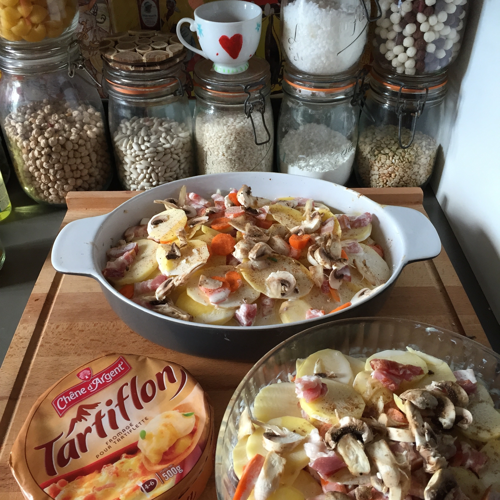

Tartiflette

Home
From the Savoie region of France, this hearty dish is a standard of local french cuisine. With potatoes, onions, bacon, and of course Reblochon cheese, it's the perfect meal to stay warm during the long mountain nights.
Ingredients
- 1.5 kg firm-fleshed potatoes
- 500 g Reblochon (or Brie, or other suitable cheese)
- 150 g thick-cut bacon, cut into 1 cm slices
- 100 g thick crème fraiche
- 1 glass dry white wine
- 3 onions
- 3 tbsp oil
- 1 tbsp coarse salt
- 10 grains white pepper
- 1 pinch nutmeg
Steps
- Wash the potatoes and boil with salt in water for 20 minutes.
- In a frying pan, cook peeled and thinly sliced onions until translucent. Add bacon and cook until golden. Deglaze with white wine and cook for 5 more minutes.
- Preheat oven to 200 °C. Slice cheese in thin slices. Grind white pepper in a mortar. Peel boiled potatoes and cut into thick slices.
- Butter an oven dish. Sprinkle with nutmeg and ground pepper. Place potato slices evenly, then pour onions and bacon mixture. Spread crème fraiche over, then place down cheese slices. Bake for 30 minutes until cheese browns.